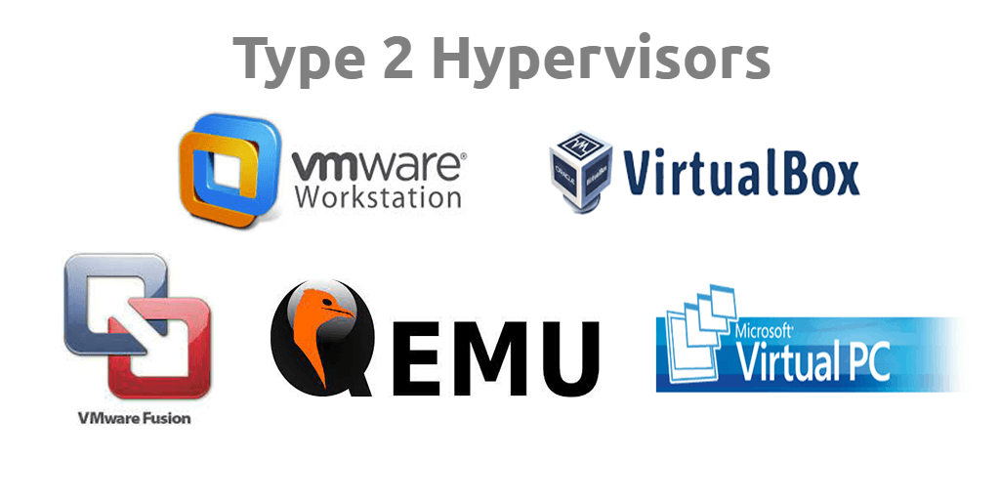
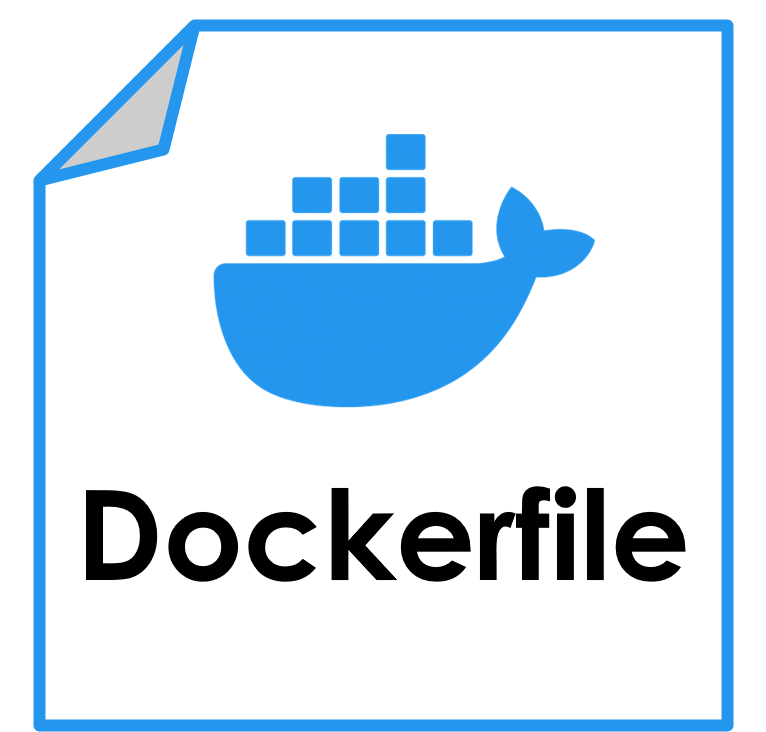

Pour naviguer, utilisez les flèches en bas à droite (ou celles de votre clavier)
Gauche/Droite: changer de chapitre
Haut/Bas: naviguer dans un chapitre
Pour avoir une vue globale : utiliser la touche "o" (pour "Overview")
🇫🇷 Devops
Docker
2023/2024
Présentation disponible à l’adresse: https://gounthar.github.io/gounthar/cours-devops-docker/hitchhiker
Version PDF de la présentation : Cliquez ici
Contenu sous licence Creative Commons Attribution 4.0 International License
Code source de la présentation: https://github.com/gounthar/gounthar/cours-devops-docker
Comment utiliser cette présentation ?
Bonjour !
Et vous ?
A propos du cours
Calendrier
📊 Évaluation
Plan
Docker
Pourquoi ?
🤔 Quel est le problème ?
Pourquoi commencer par un problème ?
🤔 Commençons plutôt par une définition:
Docker c’est …
Pourquoi commencer par un problème ?
🤔 Définition quelque peu datée (2014):
Docker is …
Pourquoi commencer par un problème ?
🤔 Définition quelque peu datée (2014):
Docker is a toolset for Linux containers designed to ‘build, ship and run’ distributed applications.
Linux containers ?
🤔 Nous voilà bien…
C’est quoi un container?
Linux containers ?
🤔 Nous voilà bien…
C’est quoi un container?
Vous voulez la version enfant de 5 ans? Je ne crois pas…
Docker est vieux
10 ans déjà…

Docker est vieux
Mais moi aussi…

Docker on arm
Docker on *
On n’avait pas parlé d’un problème?

On n’avait pas parlé d’un problème?

On n’avait pas parlé d’un problème?

On n’avait pas parlé d’un problème?
Histoire vraie.
| |
cc | |
| |
nan | |
| |
pas standard dsl |

On n’avait pas parlé d’un problème?

Problème de temps exponentiel
Déjà vu ?
L’IT n’est pas la seule industrie à résoudre des problèmes…

Solution: Le conteneur intermodal
"Separation of Concerns"

Comment ça marche ?
Comment ça marche ?
Virtualisation

Comment ça marche ?
Virtualisation


Comment ça marche ?
Légère, vraiment!
Légère, vraiment!
Conteneur != VM

Idée erronée mais citée trop fréquemment !
Conteneur != VM

Conteneur != VM

Conteneur != VM
Conteneur != VM
Conteneur != VM

Conteneur != VM

Conteneur != VM
Conteneur != VM

Conteneur != VM
Conteneur != VM

Conteneur != VM
"Separation of concerns": 1 "tâche" par conteneur

VMs & Conteneurs
Non exclusifs mutuellement

🤡 Docker, c’est pas un peu une VM quand même?

🤡 Docker, c’est pas un peu une VM quand même?
Cas d’usage
Le bac à sable

Cas d’usage
Le bac à sable
Un environnement tout propre tout neuf !
Cas d’usage
Le bac à sable
Un environnement tout propre tout neuf !
Le poste de travail n’est pas impacté
Cas d’usage
Le bac à sable
Un environnement tout propre tout neuf !
Le poste de travail n’est pas impacté
La configuration reste également isolée sans effet sur le poste de travail
Cas d’usage
La machine de dév

Cas d’usage
La machine de dév
Avoir un environnement reproductible pour rendre homogène le développement et les tests.
Cas d’usage
La machine de dév

Cas d’usage
La machine de dév

Cas d’usage
Cas d’usage
Cas d’usage
Outillage jetable

Cas d’usage
Outillage jetable
On instancie des applications sans les installer
Cas d’usage
Outillage jetable
On instancie des applications sans les installer
On crée le container, on l’utilise puis on le jette
Beau boulot! 🤗

On a la base, remplissons là maintenant de containers!
La suite: vers la droite ➡️

Préparer votre environnement de travail
Outils Nécessaires 🛠
GitPod
Démarrer avec GitPod 🚀
Autorisations demandées par GitPod 🔓
Validation du Compte GitPod 📱
GitPod vous demande votre numéro de téléphone mobile afin d’éviter les abus (service gratuit). Saisissez un numéro de téléphone valide pour recevoir par SMS un code de déblocage :

⚠️ Passez à la slide suivante avant d’aller plus loin
Choix de l’Éditeur de Code ✎
Choisissez l’éditeur "VSCode Browser" (la première tuile) :

⚠️ Passez à la slide suivante avant d’aller plus loin
Workspaces GitPod 🗂
Vous arrivez sur la page listant les "workspaces" GitPod :
Un workspace est une instance d’un environnement de travail virtuel (C’est un ordinateur distant)
⚠ Faites attention à réutiliser le même workspace tout au long de ce cours ⚠

Permissions GitPod <→ GitHub 🔐
Démarrer l’environnement GitPod
Cliquez sur le bouton ci-dessous pour démarrer un environnement GitPod personnalisé:

Après quelques secondes (minutes?), vous avez accès à l’environnement:
Gauche: navigateur de fichiers ("Workspace")
Haut: éditeur de texte ("Get Started")
Bas: Terminal interactif
À droite en bas: plein de popups à ignorer (ou pas?)
Source disponible dans : https://github.com/gounthar/cours-devops-docker
Checkpoint 🎯
📚 Et Gitlab?
Containers
🎓 Exercice : Votre premier conteneur
🩻 Anatomie
🩻 Anatomie
🩻 Anatomie
🩻 Anatomie
🩻 Anatomie

🩻 Anatomie
🩻 Anatomie

🩻 Anatomie
🩻 Anatomie
🩻 Anatomie

🩻 Anatomie
🎓 Exercice : Où est mon conteneur ?
✅ Solution : Où est mon conteneur ?
🫁 Rappels d’anatomie
🫁 Rappels d’anatomie
🫁 Rappels d’anatomie
🫁 Rappels d’anatomie
🫁 Rappels d’anatomie
🫁 Rappels d’anatomie
🍽️ Cas d’usage
Outillage jetable
Tester une version de Maven, de JDK, de NPM, …
🎓 Exercice : Cycle de vie d’un conteneur simple
✅ Solution : Cycle de vie d’un conteneur simple
🤔 Que contient "hello-world" ?
Docker Hub
🏓 Lancer un container interactif
🏓 Lancer un container interactif
🏓 Lancer un container interactif
🏓 Lancer un container interactif
🏓 Lancer un container interactif
🏓 Lancer un container interactif
🎓 Exercice : conteneur interactif
✅ Solution : conteneur interactif
🏓 Utiliser un container interactif
🏓 Utiliser un container interactif
🏓 Utiliser un container interactif
🏓 Utiliser un container interactif
🏓 Utiliser un container interactif
🏓 Utiliser un container interactif
🏓 Utiliser un container interactif
🏓 Utiliser un container interactif
🏓 Utiliser un container interactif
🏓 Utiliser un container interactif
🏓 Utiliser un container interactif
🏓 Utiliser un container interactif
🏓 Utiliser un container interactif
🏓 Utiliser un container interactif
🏓 Utiliser un container interactif

" On m’a vendu un truc qui permet de lancer des tonnes de microservices… mais là, on télécharge nimps et s’amuse à le perdre…"
⛅ Conteneur en tâche de fond
⛅ Conteneur en tâche de fond
⛅ Conteneur en tâche de fond
⛅ Conteneur en tâche de fond
Lançons un container bien particulier…
docker container run --interactive --tty jpetazzo/clock
Mon Sep 25 10:33:51 UTC 2023
Mon Sep 25 10:33:52 UTC 2023
Mon Sep 25 10:33:53 UTC 2023
Mon Sep 25 10:33:54 UTC 2023
Mon Sep 25 10:33:55 UTC 2023
Mon Sep 25 10:33:56 UTC 2023
...Ce container va tourner indéfiniment sauf si on le stoppe avec ⌨️ Ctrl+C…
… mais ca va stopper le container !

⛅ Conteneur en tâche de fond
⛅ Conteneur en tâche de fond
⛅ Conteneur en tâche de fond
⛅ Conteneur en tâche de fond
" Okay, maintenant il n’écrit la date nulle part… mais toutes les secondes… à l’aide ! "
⛅ Conteneur en tâche de fond
⛅ Conteneur en tâche de fond
⛅ Conteneur en tâche de fond
⛅ Conteneur en tâche de fond
📖 Lister les containers
📖 Lister les containers
📖 Lister les containers
📖 Lister les containers
🛑 🏁 Stop / Start
🛑 🏁 Stop / Start
📖 Lister tous les containers
📖 Lister tous les containers
📖 Lister tous les containers
📖 Lister tous les containers
🧽 Nettoyage
🧽 Nettoyage
🧽 Nettoyage
🧽 Nettoyage
🧽 Nettoyage
⏰ Rappel: cycle de vie d’un container

⏰ Rappel: cycle de vie d’un container
⏰ Rappel: cycle de vie d’un container

⏰ Rappel: cycle de vie d’un container

⏰ Rappel: cycle de vie d’un container

🔄 Reprendre le contrôle
🔄 Reprendre le contrôle
🔄 Reprendre le contrôle
🔄 Reprendre le contrôle
🔄 Reprendre le contrôle
🔄 Reprendre le contrôle
🔄 Reprendre le contrôle
🔄 Reprendre le contrôle
Sur un container en arrière-plan

docker container exec --interactive --tty <containerID> bashCa fonctionne aussi en interactif !
🎓 Exercice : conteneur en tâche de fond
✅ Solution : conteneur en tâche de fond
🎓 Exercice : conteneur en tâche de fond
✅ Solution : conteneur en tâche de fond
🎓 Exercice : conteneur en tâche de fond
✅ Solution : conteneur en tâche de fond
Checkpoint 🎯
Vous savez désormais:
Maîtriser le cycle de vie des containers
Interagir avec les containers existants


Checkpoint 🎯
Docker Images

🤔 Pourquoi des images ?
🤔 C’est quoi une image ?
🤔 C’est quoi une image ?
🤔 C’est quoi une image ?
🤔 C’est quoi une image ?
🍰 Détail des couches
🍰 Détail des couches
🍰 Détail des couches
🍰 Détail des couches
Exemple d’une image Apache HTTPd "custom"

🍰 Détail des couches
🍰 Détail des couches
Exemple d’une image Apache HTTPd "custom"

Dicton du jour
"L’image est à la classe ce que le container est à l’objet"

C’est quoi le principe ?
🐋 📖🍳 Le livre de recettes


🐋 📖🍳 Le livre de recettes
🐋 📖🍳 Le livre de recettes
🐋 📖🍳 Le livre de recettes
🐋 📖🍳 Le livre de recettes
🤔 Pourquoi fabriquer sa propre image ?
🎓 Fabriquer sa première image
✅ Fabriquer sa première image
🐋 📖🍳 Fabriquer son image
Un peu de cuisine…

🐋 📖🍳 Fabriquer son image
🐋 📖🍳 Fabriquer son image

FROM alpine:3.18
LABEL maintainer="Tony Stark"
RUN apk update
RUN apk add openjdk17-jre-headless🐋 📖🍳 Cuistot, au boulot!
🐋 📖🍳 Cuistot, au boulot!
🐋 📖🍳 Cuistot, au boulot!

🐋 📖🍳 Cuistot, au boulot!
docker image build -t myjava:1.42 .🪜 Étapes de construction
🪜 Étapes de construction

🪜 Étapes de construction
Et après ?
L’image est dispo !
docker container run --interactive --tty myjava:1.42 sh
/ $/ $ java -version
openjdk version "17.0.8" 2023-07-18
OpenJDK Runtime Environment (build 17.0.8+7-alpine-r0)
OpenJDK 64-Bit Server VM (build 17.0.8+7-alpine-r0, mixed mode, sharing)
Registre local, mais encore?
Les registres Docker
🖼️ Les images
🍰 Un téléchargement par couches
🖼🏷️ Conventions de nommage des images
🖼🏷️ Conventions de nommage des images

🖼🏷️ Conventions de nommage des images
🖼🏷️ Conventions de nommage des images

📷🏷️ Conventions de nommage des images
📷🏷️ Conventions de nommage des images
📷🏷️ Conventions de nommage des images
📷🏷️ Conventions de nommage : Exemples
🎓 Mettre à jour votre image (1.1.0)
✅ Mettre à jour votre image (1.1.0)
Cache d’images & Layers
Step 2/4 : RUN apt-get update && apt-get install --yes --no-install-recommends git
---> Using cache🤔 En fait, Docker n’a PAS exécuté cette commande la seconde fois ⇒ ça va beaucoup plus vite !

🎓 Essayez de voir les layers avec (dans Gitpod) dive <image>:<tag>
🎓 Cache d’images & Layers
✅ Cache d’images & Layers
Comportement par défaut des containers
Deux instructions permettent de définir la commande à lancer au démarrage du container.

Comportement par défaut des containers
Deux instructions permettent de définir la commande à lancer au démarrage du container.

Laquelle choisir ???
CMD vs ENTRYPOINT
Cas d’usage : énoncé du besoin.
Besoin : je veux utiliser cURL mais il n’est pas présent sur la machine hôte.
Facile !
docker container run --rm curlimages/curl curl -x http://prx:3128 -L --connect-timeout 60 "http://google.com"
CMD vs ENTRYPOINT
Cas d’usage. On va s’outiller!
FROM alpine:3.18
LABEL maintainer="John Doe"
RUN apk update && apk add curl
# Si vous utilisez le proxy de l'Université
CMD ["curl","-x", "http://prx:3128", "-L", "--connect-timeout", "60", "http://google.com"]
# Si vous utilisez votre propre proxy docker
# CMD ["curl","-x", "http://host.docker.internal:3128", "-L", "--connect-timeout", "60", "http://google.com"]docker image build -t my-curl:1.0 .docker container run --rm my-curl:1.0
<!doctype html><html [...]
google blahblahblah [...]
</html>
CMD vs ENTRYPOINT
Cas d’usage.

CMD vs ENTRYPOINT
Cas d’usage.